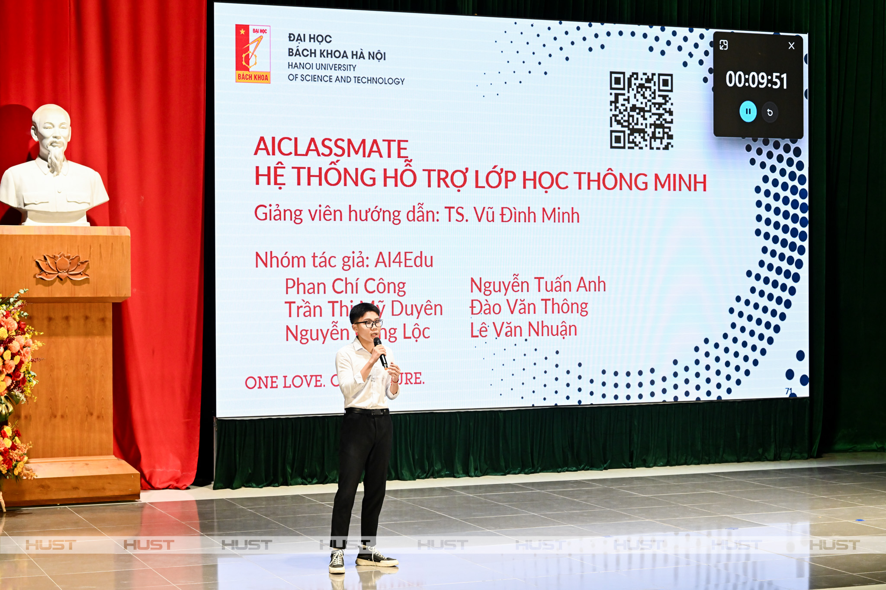
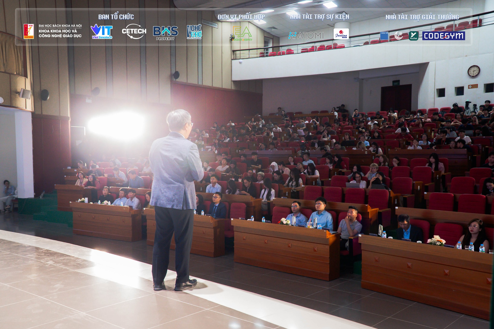

HỌC CÔNG NGHỆ GIÁO DỤC RA TRƯỜNG LÀM GÌ?
CƠ HỘI NGHỀ NGHIỆP
TRONG KỶ NGUYÊN SỐ
Tại Khoa Khoa học và Công nghệ Giáo dục, Đại học Bách khoa Hà Nội, sinh viên không chỉ được trang bị kiến thức về khoa học giáo dục, công nghệ thông tin, truyền thông đa phương tiện mà còn được tham gia các dự án thực tế cùng doanh nghiệp, chương trình trao đổi quốc tế và nghiên cứu khoa học. Nhờ đó, sinh viên có thể đảm nhận nhiều vị trí việc làm đa dạng ngay sau khi tốt nghiệp.

CHUYÊN VIÊN THIẾT KẾ VÀ PHÁT TRIỂN HỌC LIỆU SỐ
Đây là một trong những hướng nghề nghiệp phổ biến nhất của sinh viên Công nghệ Giáo dục. Với kiến thức về thiết kế dạy học, đồ hoạ, video, công nghệ thực tế ảo (VR), thực tế tăng cường (AR) và trò chơi giáo dục, sinh viên có thể tham gia xây dựng các sản phẩm học tập hiện đại phục vụ trường học, doanh nghiệp và các nền tảng đào tạo trực tuyến.
Nhiều sinh viên đã có cơ hội thực hiện các dự án e-learning, video giáo dục, mô phỏng tương tác và trò chơi học tập ngay từ khi còn trên ghế nhà trường.
CHUYÊN VIÊN THIẾT KẾ KHÓA HỌC TRỰC TUYẾN
Sự phát triển của MOOCs, e-learning và blended learning đã tạo ra nhu cầu lớn về đội ngũ thiết kế khóa học số. Sinh viên Công nghệ Giáo dục được đào tạo bài bản về phân tích nhu cầu người học, xây dựng nội dung, thiết kế hoạt động học tập và đánh giá hiệu quả đào tạo.
Các tổ chức giáo dục, doanh nghiệp đào tạo nội bộ và các nền tảng học tập trực tuyến đều đang cần nguồn nhân lực ở vị trí này.

CHUYÊN VIÊN QUẢN TRỊ HỆ THỐNG LMS VÀ LCMS
Các hệ thống quản lý học tập (LMS) ngày càng được triển khai rộng rãi trong trường học và doanh nghiệp. Sinh viên ngành Công nghệ Giáo dục có khả năng vận hành, quản trị và tối ưu các nền tảng đào tạo trực tuyến, đảm bảo quá trình dạy học diễn ra hiệu quả.
Đây là vị trí kết hợp giữa kiến thức công nghệ và hiểu biết về giáo dục, phù hợp với xu hướng chuyển đổi số trong đào tạo hiện nay.
CHUYÊN VIÊN PHÂN TÍCH NGHIỆP VỤ GIÁO DỤC (BUSINESS ANALYST)
Trong các doanh nghiệp EdTech, tổ chức giáo dục hoặc các dự án phát triển sản phẩm học tập, chuyên viên phân tích nghiệp vụ đóng vai trò kết nối giữa đội ngũ kỹ thuật và người dùng.
Với khả năng nghiên cứu nhu cầu người học, phân tích quy trình đào tạo và đề xuất giải pháp công nghệ phù hợp, sinh viên Công nghệ Giáo dục có nhiều lợi thế để phát triển trong lĩnh vực này.
CHUYÊN VIÊN ĐÀO TẠO VÀ PHÁT TRIỂN NGUỒN NHÂN LỰC
Không chỉ làm việc trong các trường học, sinh viên Công nghệ Giáo dục còn có thể đảm nhiệm vai trò phụ trách đào tạo tại doanh nghiệp. Công việc bao gồm xây dựng chương trình đào tạo, tổ chức các khóa học nội bộ, đánh giá năng lực nhân sự và phát triển văn hóa học tập trong tổ chức.
Đây là một trong những lĩnh vực có nhu cầu tuyển dụng ngày càng tăng khi doanh nghiệp chú trọng phát triển nguồn nhân lực chất lượng cao.
CHUYÊN GIA STEM/STEAM VÀ GIÁO VIÊN ĐỔI MỚI SÁNG TẠO
Xu hướng giáo dục STEM/STEAM đang được triển khai mạnh mẽ tại các trường phổ thông và trung tâm giáo dục. Sinh viên Công nghệ Giáo dục được tiếp cận các phương pháp dạy học hiện đại, học tập theo dự án và thiết kế hoạt động trải nghiệm sáng tạo.
Sau khi tốt nghiệp, người học có thể trở thành chuyên gia STEM/STEAM, giáo viên đổi mới sáng tạo hoặc nhà phát triển chương trình giáo dục STEM.
LÀM VIỆC TRONG LĨNH VỰC TRUYỀN THÔNG VÀ SẢN XUẤT NỘI DUNG GIÁO DỤC
Các đài truyền hình, đơn vị truyền thông, doanh nghiệp giáo dục và nền tảng mạng xã hội đều cần đội ngũ sản xuất nội dung giáo dục chất lượng cao.
Nhờ khả năng kết hợp giữa giáo dục, công nghệ và truyền thông, sinh viên có thể tham gia xây dựng các chương trình khoa giáo, sản xuất video học tập, phát triển nội dung số và quản lý các kênh truyền thông giáo dục.
TIẾP TỤC HỌC TẬP VÀ NGHIÊN CỨU CHUYÊN SÂU
Bên cạnh cơ hội việc làm đa dạng, sinh viên Công nghệ Giáo dục còn có thể tiếp tục học lên Thạc sĩ và Tiến sĩ trong các lĩnh vực Khoa học giáo dục, Công nghệ giáo dục, Lý luận và phương pháp dạy học hoặc các ngành liên quan.
Nhiều sinh viên đã tham gia các chương trình trao đổi nghiên cứu quốc tế, các dự án hợp tác với trường đại học nước ngoài và tiếp tục theo đuổi con đường học thuật.
Trong thời đại học tập suốt đời trở thành xu thế tất yếu, ngành Công nghệ Giáo dục đang mở ra một hệ sinh thái nghề nghiệp rộng lớn. Với nền tảng kiến thức liên ngành cùng khả năng thích ứng cao, sinh viên ngành Công nghệ Giáo dục hoàn toàn có thể tự tin bước vào thị trường lao động và đóng góp vào sự đổi mới của giáo dục trong tương lai.